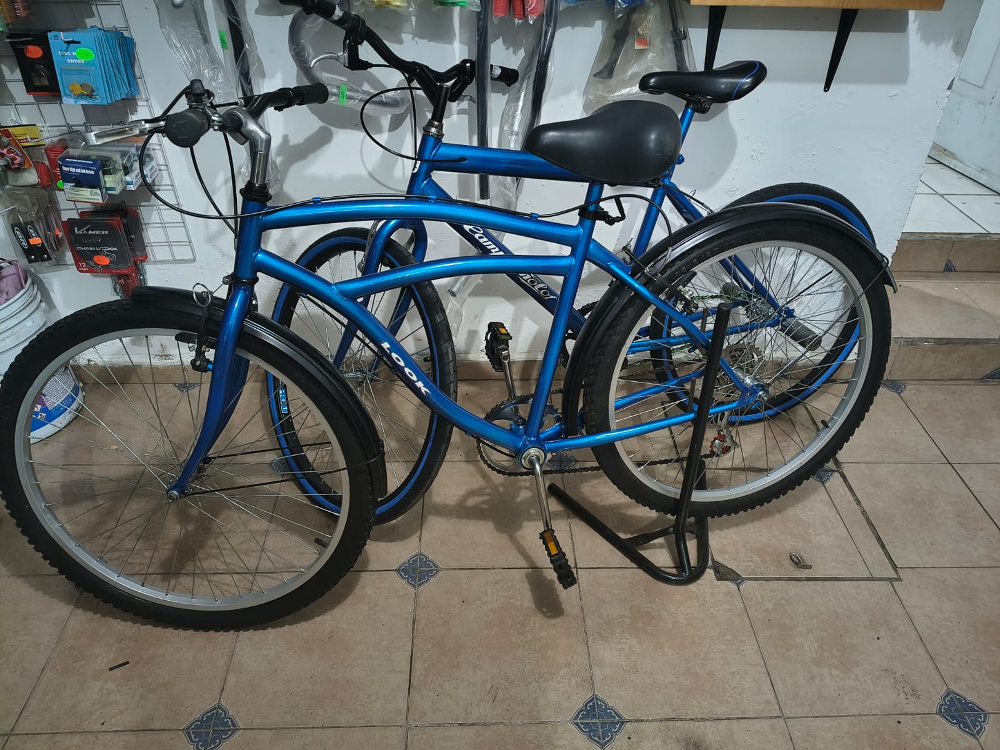
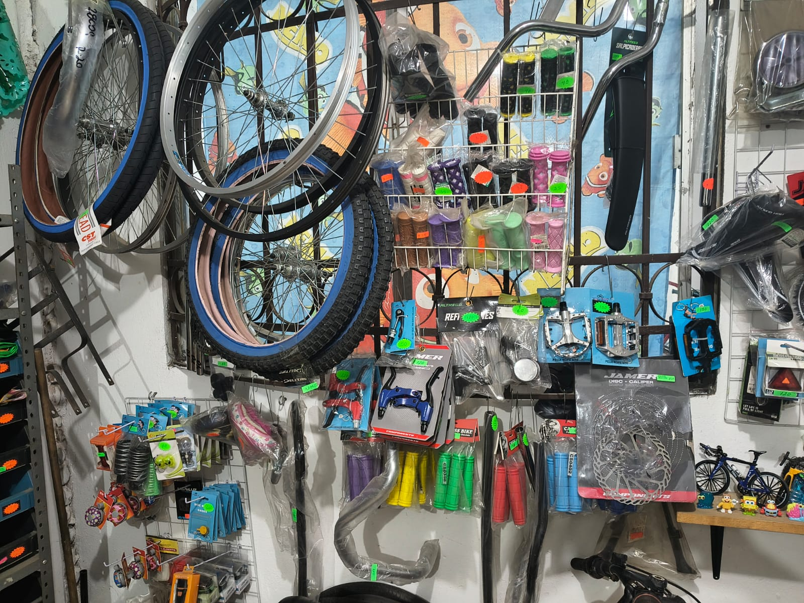
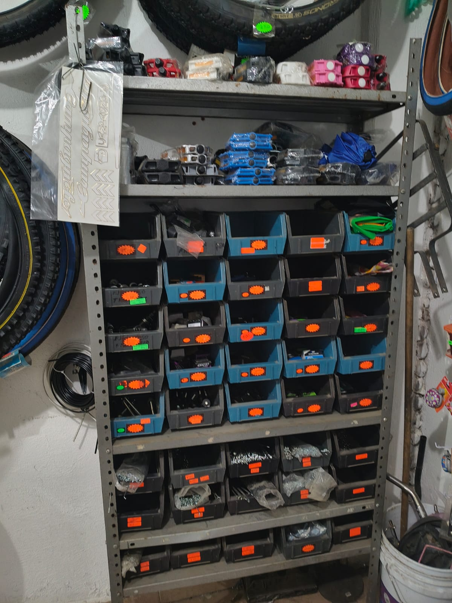
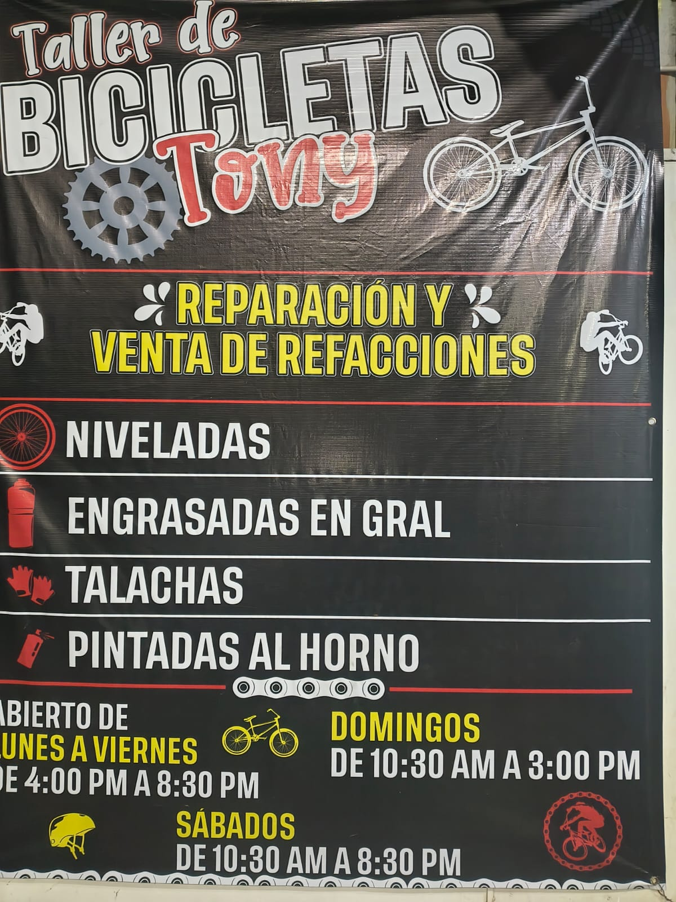

01 / 04
Niveladas
Un rin con vaivén roza los frenos y se siente en cada vuelta. Lo nivelamos para que la rueda gire derecha y tu bici vuelva a sentirse firme.
Quiero mi rin derechoRueda chueca
Taller de Bicicletas Tony
Reparación y refacciones en Villas de San Martín
Niveladas, engrasadas, talachas y pintadas al horno, más refacciones a la mano. Llégale con tu bici y sal rodando.
00 Por qué existimos
— El taller de Villas de San Martín
01 Lo que hacemos
Reparación y venta de refacciones con el oficio de siempre. Elige lo que necesita tu bici y mira cómo lo resolvemos.
01 / 04
Un rin con vaivén roza los frenos y se siente en cada vuelta. Lo nivelamos para que la rueda gire derecha y tu bici vuelva a sentirse firme.
Quiero mi rin derechoRueda chueca
02 / 04
Una cadena seca rechina, jala duro y se gasta antes. Engrasamos lo que tu bici necesita para que ruede suave y en silencio.
Quiero que ruede suaveCadena seca
03 / 04
Ese ajuste o esa reparación del día a día que no puede esperar. Pásate al taller, cuéntanos qué le pasa a tu bici y la dejamos lista.
Tengo una talacha para ustedesTodo acoplado y girando
04 / 04
Un acabado parejo y resistente que renueva tu bici por completo. Elige un color en el simulador y mira cómo luciría.
Color elegido: Amarillo
Simulador de referencia visual: confirmamos por WhatsApp los colores disponibles.
Listo para hornear

— Adentro del taller
Herramienta, refacciones colgadas a la vista y bicis que esperan su turno. Así se ve el trabajo de todos los días.
Estoy listo, voy para allá02 Venta de refacciones
Llantas, rines, puños, pedales, frenos y mucho más colgados a la vista. Toca los puntos de la foto para ver qué hay en la pared.


Marca lo que buscas y te armamos el mensaje para preguntar si lo tenemos.
03 Cómo funciona
Cuéntanos qué le pasa a tu bici o qué pieza buscas. Si puedes, mándanos una foto.
Estoy listo, escríbelesEstamos en Villas de San Martín, Estado de México. Lunes a viernes de 4:30 PM a 8:30 PM; sábados y domingos desde las 10:30 AM.
Ver cómo llegarRevisamos, ajustamos y listo: tu bici de vuelta en la calle, firme y lista para el siguiente tramo.
04 Horarios y ubicación
Consulta nuestros horarios
Atendemos de lunes a domingo.

Villas de San Martín, Estado de México
19.267058, -98.835130 · 7587+RWH
05 Dudas comunes
Hacemos niveladas de rin, engrasadas en general, talachas y pintadas al horno. También vendemos refacciones para bicicleta.
De lunes a viernes de 4:30 PM a 8:30 PM, sábados de 10:30 AM a 8:30 PM y domingos de 10:30 AM a 3:00 PM.
En Villas de San Martín, Estado de México. Abre el mapa de esta página para ver la ubicación exacta o escríbenos por WhatsApp.
Depende de tu bici y del trabajo que necesite. Mándanos una foto y una descripción por WhatsApp y te orientamos.
Claro. Dinos qué pieza buscas (con foto si la tienes) y te confirmamos si la tenemos. Puedes usar el buscador de refacciones de esta página.
Hacemos pintadas al horno. Cuéntanos qué color tienes en mente y te confirmamos las opciones disponibles.
06 Hablemos de tu bici
Llena el formulario y se abrirá WhatsApp con tu mensaje listo para enviarlo al taller. Sin vueltas.
Lun a vie 4:30–8:30 PM · Sáb 10:30 AM–8:30 PM · Dom 10:30 AM–3:00 PM